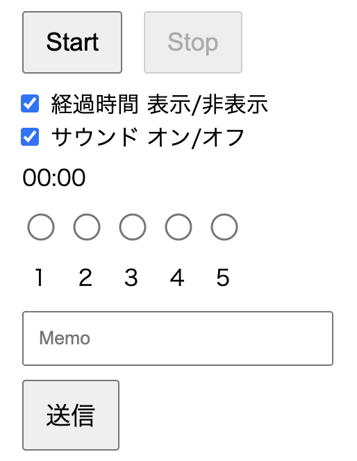

悩み度測定
システム概要
悩み度の送信
startボタン：タイマーが開始します。作業を開始するときに押してください。
stopボタン：タイマーが終了します。作業を中断・終了するときに押してください。
悩み度の送信：
15分おきにアラートが表示されるので、アラートが表示されたタイミングで悩み度を5段階で評価しチェックしてください。
メモに残しておくことがあればメモ欄に記入し、送信してください。
グラフ・表

送信されると下のグラフに悩み度と時間がプロットされます。
表では悩み度と時間、メモ内容を確認することができます。